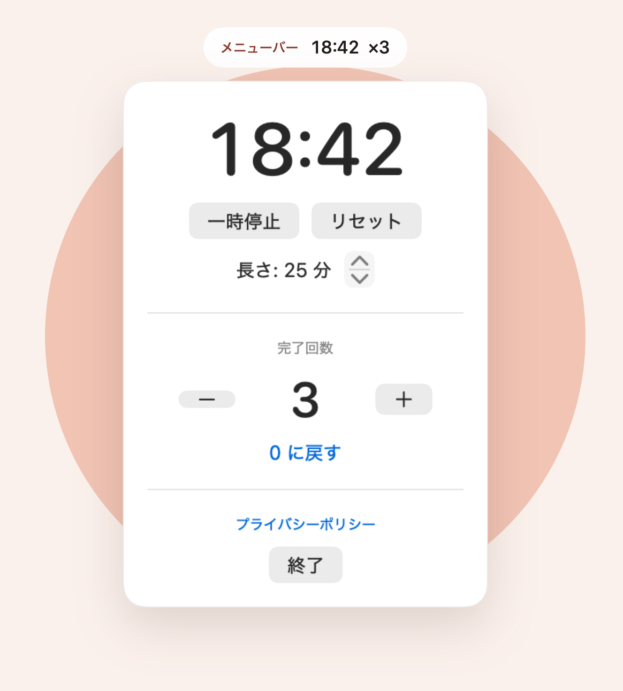

残り時間と完了回数を、ひと目で。
Macのメニューバーからタイマーを開始。作業や勉強を区切って、完了したセットの数を記録できます。
Mac版を入手macOS 14以降 · Appleシリコン・Intel対応

使い方
- メニューバーのタイマー表示をクリックします。
- 「長さ」で1〜180分を選び、「開始」を押します。
- タイマーが終わると、完了回数が1増えます。
Macのメニューバーからタイマーを開始。作業や勉強を区切って、完了したセットの数を記録できます。
Mac版を入手macOS 14以降 · Appleシリコン・Intel対応
